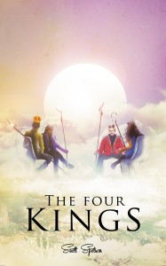

From the journal
Wizards and their magic meet misgovernment, corruption and scandal
http://www.amazon.com/review/R26R8Y1SXYKQ84
Why The Four Kings you ask?
There is nothing like it.
This novel is an adventure outside of the ordinary. What the author offers with "The Four Kings" is a answer to "The Great Blight" (which is really just a name for an era of recession, violence, unemployment, etc.). When the bloated leaders of the world cannot reel their prospective countries toward stability... Thank god for wizards!
As per usual, Scott Spotson's writing is spot-on, smooth, clever, funny, and most of all—he gives great consideration to pace and plot. I have grown to really enjoy his offerings, and I can see that there is really no limit to his imagination.
Characters and plot development are sound. The wizards whom establish control, are full of witty exchanges and keep you entangled in their rearing of a lost nation.
Wait... Someone should invite these guys over today.
You will find yourself battling over which character is your favorite and in the end, they will all hold a spot in your liking.
This novel is like an SUV (truck + van = happy man)... Combining two great things: Wizardry and politics. A genius idea from an author who delivers every time.
Seeking Dr. Magic is still my favorite.
If you like clever character interactions and wizards playing the puppeteers of political dealings, then please give this book a glance, because it is a lot of fun and like nothing you have ever read.
Why The Four Kings you ask?
There is nothing like it.
This novel is an adventure outside of the ordinary. What the author offers with "The Four Kings" is a answer to "The Great Blight" (which is really just a name for an era of recession, violence, unemployment, etc.). When the bloated leaders of the world cannot reel their prospective countries toward stability... Thank god for wizards!
As per usual, Scott Spotson's writing is spot-on, smooth, clever, funny, and most of all—he gives great consideration to pace and plot. I have grown to really enjoy his offerings, and I can see that there is really no limit to his imagination.
Characters and plot development are sound. The wizards whom establish control, are full of witty exchanges and keep you entangled in their rearing of a lost nation.
Wait... Someone should invite these guys over today.
You will find yourself battling over which character is your favorite and in the end, they will all hold a spot in your liking.
This novel is like an SUV (truck + van = happy man)... Combining two great things: Wizardry and politics. A genius idea from an author who delivers every time.
Seeking Dr. Magic is still my favorite.
If you like clever character interactions and wizards playing the puppeteers of political dealings, then please give this book a glance, because it is a lot of fun and like nothing you have ever read.
